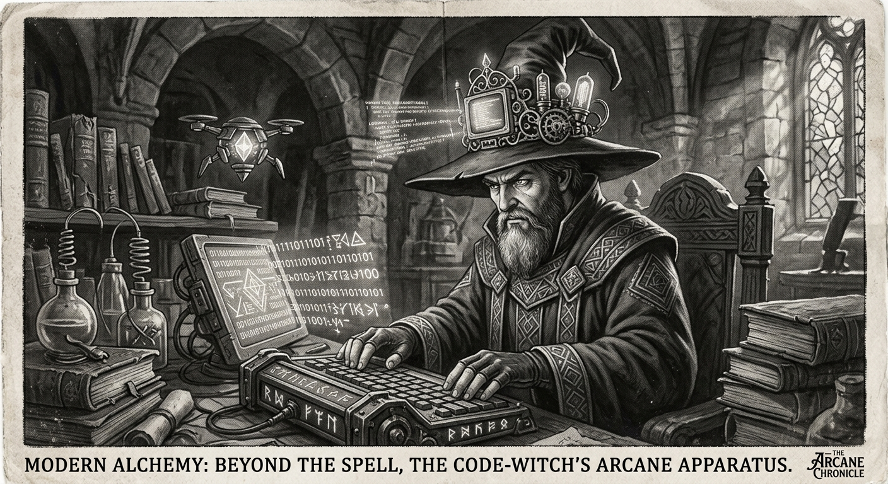

Morning Edition
6:00 AM CDTFinance & Markets
Barclays Meets Profit Goals Amid Buyback Shift
Barclays reported a solid first-quarter performance meeting profit expectations, despite a smaller-than-expected share buyback and hefty provisions related to the MFS collapse.
— Source: Reuters, April 28, 2026Ukraine Eyes Parcel VAT to Secure IMF Support
Kyiv is considering a value-added tax on inexpensive foreign parcels to ensure its $8.1 billion IMF program remains on track ahead of the June review.
— Source: Reuters, April 28, 2026Fund Finance Market Hits $1 Trillion Milestone
Driven by surging demand from the private credit sector, the fund finance market has officially surpassed the $1 trillion mark according to Moody's Ratings.
— Source: Reuters / Moody's, April 28, 2026World & US
Zelenskiy Condemns Stolen Grain Purchases
President Zelenskiy stated that Israel's purchase of grain from occupied territories is "illegitimate business," as Kyiv prepares sanctions against those profiting from stolen goods.
— Source: Reuters, April 28, 2026Iran Warns of Submarine Cable Vulnerability
Tehran has signaled that submarine cables in the Strait of Hormuz are a critical vulnerability, while simultaneously easing some internet restrictions for businesses.
— Source: Reuters, April 28, 2026
The Tuesday Oracle: A Gothic Coding Wizard explores the digital void beneath ancient gothic arches.
"The best way to predict the future is to implement it. Every line of code is a brick in the foundation of the world to come."— The Developer’s Almanac
Sagittarius Horoscope
Justin, the stars suggest caution with contracts today, especially those involving the home. Legalese might feel like obfuscated code—don't hesitate to seek a second pair of eyes. Your Rat intuition and Sagittarius drive make a powerful combination; trust your gut when it signals a logic error. Lucky numbers: 9, 27, 45. Lucky color: Deep Obsidian. ✨
— Adapted for Justin, April 28, 2026Tech, AI, Space & Crypto
-
Snowflake Pivots to Autonomous Agents
Snowflake is shifting its AI strategy from chatbots to autonomous agents that can act on data, marking a major evolution in the data warehouse space.
— Source: TechCrunch, April 28, 2026 -
SCOTUS Reviews Cisco Human Rights Case
The U.S. Supreme Court is confronting a lawsuit accusing Cisco Systems of facilitating religious persecution through its infrastructure in China.
— Source: Reuters, April 28, 2026 -
Saba Capital Targets Souring Private Credit
Boaz Weinstein’s Saba Capital is raising funds for a new vehicle specifically designed to buy up underperforming private credit assets.
— Source: Reuters, April 28, 2026
Active Reminders
- Test reminder from Nemu (Jan 29)
- Connect Nemu to Notion (Feb 1)
- Research VPN/proxy services (Feb 1)
- Create security OpenClaw bot (Feb 2)
- Plaid Integration Research (Feb 4)
- Build Oomi iOS and Android app (Feb 15)